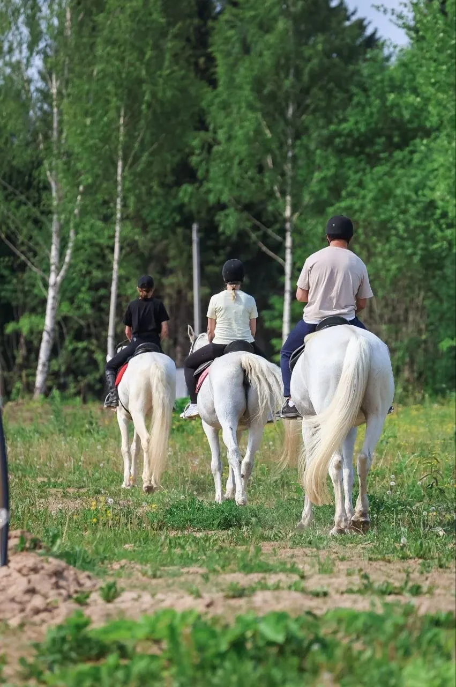
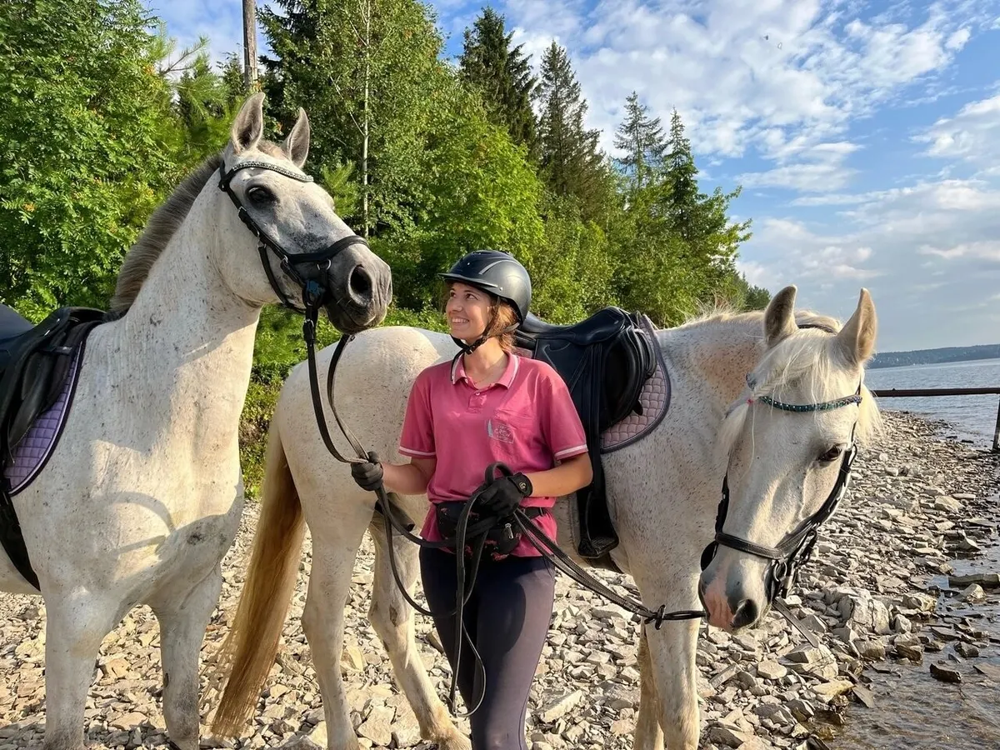
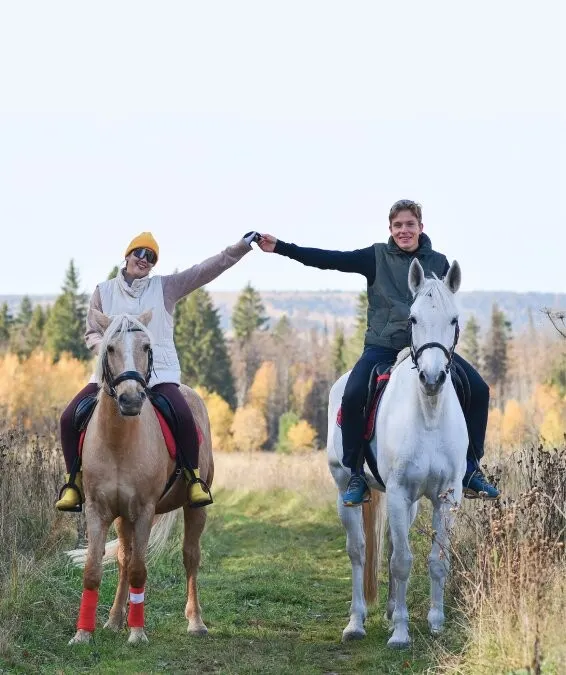
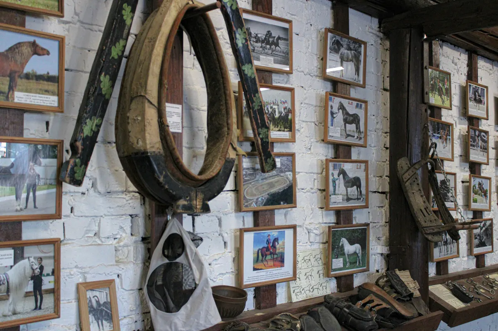

Конный клуб · Пермь
Престиж: прогулки и активный отдых в Перми
Программы, цены и запись на нужную дату - в одном сообщении.
- Запись одним сообщением
- Ждём: вт-вс 10:00–18:00
- 5,0 и 112 отзывов на Яндекс.Картах

Направления и цены
Стоимость назовёт администратор при записи.
Что можно выбрать
- Конная прогулка по лесув отзывах: познавательная экскурсия и хороший маршрутуточнить
- Обучение верховой ездеуказано в особенностях: индивидуальное обучениеуточнить
- Пони, ослик и барашекв отзыве: можно кормить морковкойуточнить
- Иппотерапияуказано в особенностях карточкиуточнить
- Детский праздникв отзыве: проводили день рождения дочериуточнить
Как записаться
Пишете нам
Выберите направление, дату и время в форме ниже или напишите в мессенджер.
Уточняем детали
Администратор подтверждает время и отвечает на вопросы.
Приходите
Адрес: Добрянский муниципальный округ, деревня Залесная, Заводская улица, 4.



Что пишут гости
Ухоженные кони и территория
Гости пишут про чистую конюшню и ухоженных лошадей.
Рядом лес
В отзыве: не так далеко от города, рядом прекрасная природа.
Подходит новичкам
В отзыве: даже начинающих ждёт полноценная конная прогулка.
Отзывы с Яндекс.Карт
«Занимаюсь в конном клубе Престиж второй год, очень люблю это место! Тренера профессионалы в своём деле, и, что немаловажно, всегда вежливые и приятные в общении. Научили чистить и седлать лошадь, помимо самой верховой езды. Лошади в хорошей форме и адекватные, видно, что их очень любят и хорошо ухаживают. Желаю клубу развития! <3»
Наталья Панченко · 24 мая
«Галина Алексеевна великолепная женщина, вызывающая только восхищение и уважение. Были на конной прогулке, сразу захотелось вернуться обратно. Все объяснили, показали, дали оборудование, кони в хорошем состоянии как психическом так и физическом.»
Полина Ялтонская · 23 июня
«Недавно побывали в этом клубе и теперь хочется вернуться и снова увидеть полюбившихся лошадок 🤍 Ухоженные кони и территория, вокруг красивый лес, прогулки проходят в живописных местах. Видно, что сотрудники профессионалы, очень много знают о лошадях и хорошо о них заботятся. Думаю здесь будет очень интересно детям и зимой, и летом . Хотим попасть на новогоднюю программу, будет точно весело.»
Юлия · 18 октября 2024
Отзывы с карточки на Яндекс.Картах.
Частые вопросы
Как записаться?
Выберите направление, день и время в форме на странице или напишите в мессенджер. Администратор подтвердит запись.
Где вы находитесь?
Добрянский муниципальный округ, деревня Залесная, Заводская улица, 4. вт-вс 10:00–18:00.
Сколько это стоит?
Стоимость назовёт администратор при записи. Актуальные цены уточняйте у него.
Запишитесь - ответим в течение дня
- Адрес
- Добрянский муниципальный округ, деревня Залесная, Заводская улица, 4, Пермь
- Часы
- вт-вс 10:00–18:00
- Телефон
- +7 (912) 782-69-43